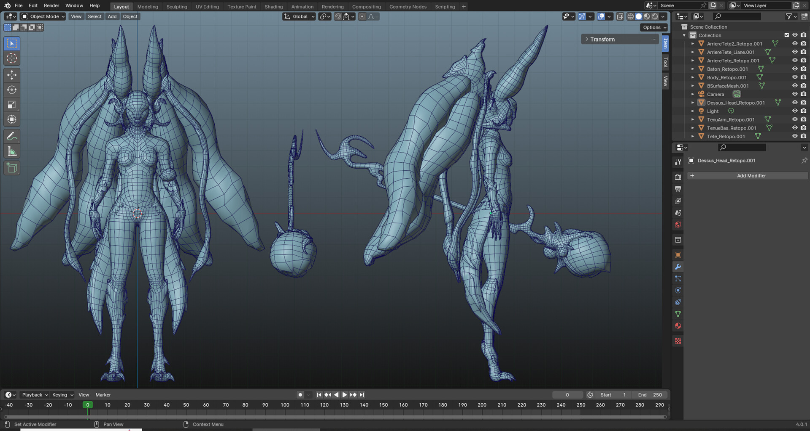
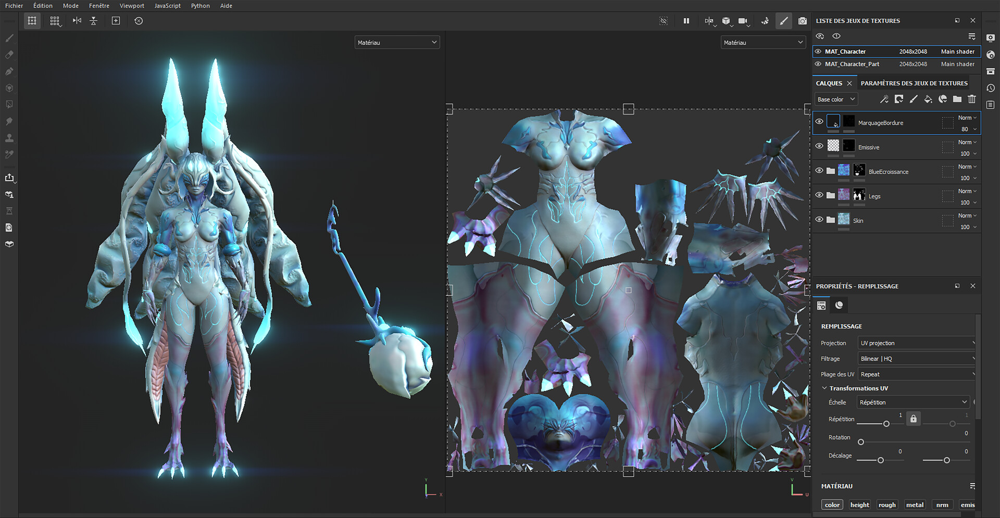
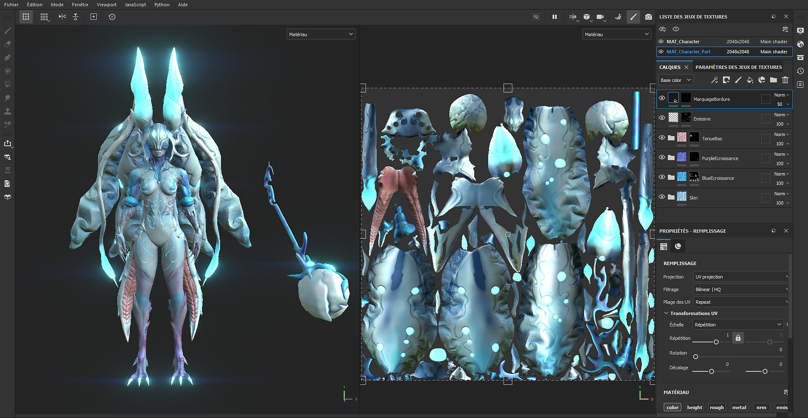
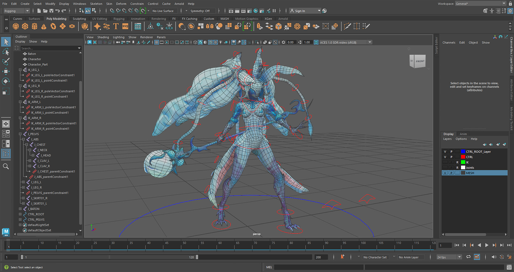
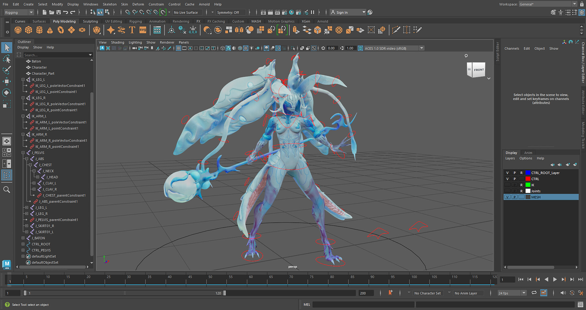
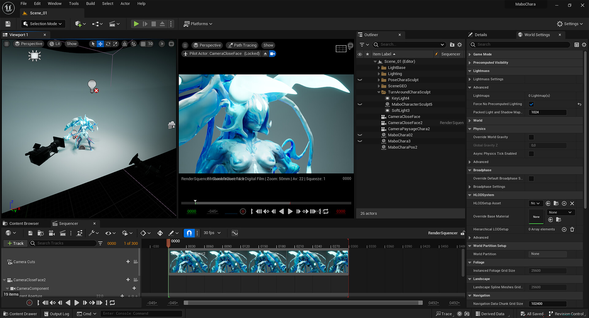
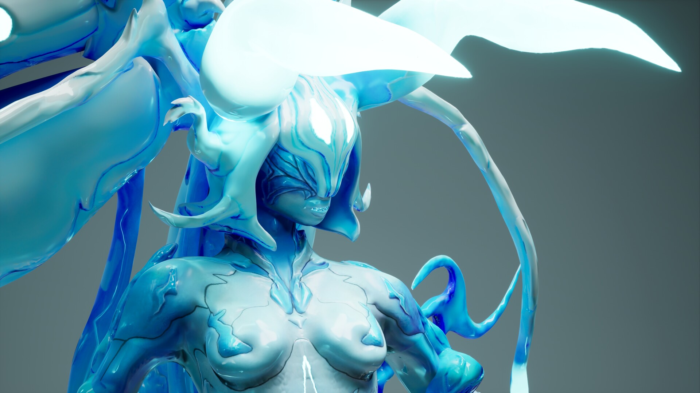
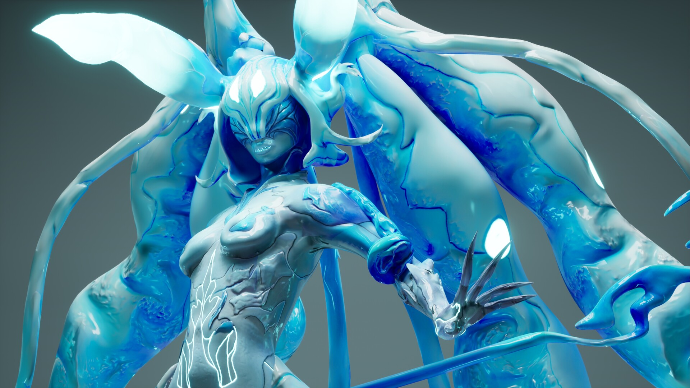

Sculpting
This was my first few weeks with ZBrush, and my first project on the software. I started modeling directly in ZBrush, beginning with a study of human anatomy as if I were doing a complete study. Then I added the outgrowths until I reached the desired result.
Retopology
I normally do retopology in Maya, but I wanted to start using Blender to get more familiar with the software. I retopologized the sculpted version to make it easier to unwrap for texturing, and to give the rig a game-ready base.

Texturing
Texturing sits at the same level as the rig in the pipeline, but I prefer to texture first for visual comfort during rigging. I mainly used map bakes and gradient work to build the character's texture, with hand-painting in some areas.


Rig
I could have settled for an auto-rig to pose the model, but I prefer to build the rig myself, for learning and skill development. The rig is recreated each time I need to pose or animate the model.


Rendering
I chose Unreal Engine to showcase this project because I have been working extensively with it, both for learning and for this year's project, a video game. It is also a way to grow the skills that connect my Houdini work to Blueprint.

Final Renders
The finished creature, lit and rendered in realtime in Unreal Engine 5.

